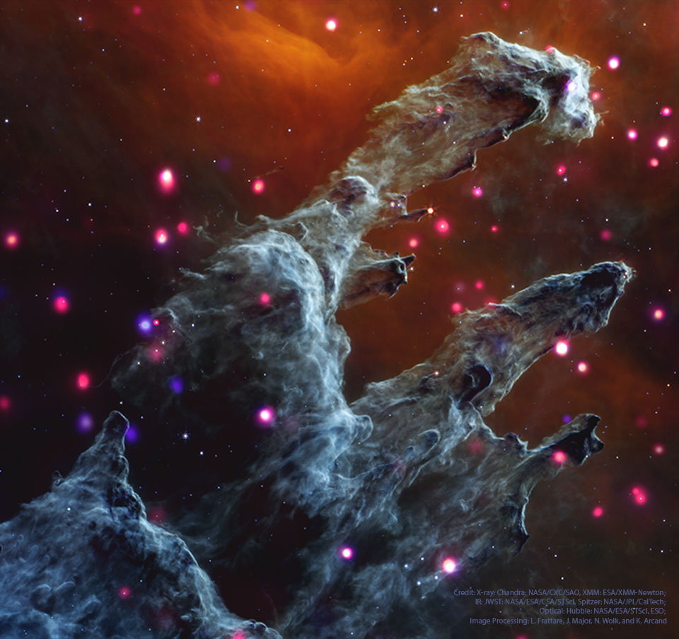

2023 July 25
Explanation: What do the famous Eagle Nebula star pillars look like in X-ray light? To find out, NASA's orbiting Chandra X-ray Observatory peered in and through these interstellar mountains of star formation. It was found that in M16 the dust pillars themselves do not emit many X-rays, but a lot of small-but-bright X-ray sources became evident. These sources are shown as bright dots on the featured image which is a composite of exposures from Chandra (X-rays), XMM (X-rays), JWST (infrared), Spitzer (infrared), Hubble (visible), and the VLT (visible). What stars produce these X-rays remains a topic of re- search, but some are hypothesized to be hot, recently-formed, low-mass stars, while others are thought to be hot, older, high-mass stars. These X-ray hot stars are scattered around the frame -- the previously identified Evaporating Gaseous Globules (EGGS) seen in visible light are not currently hot enough to emit X-rays.